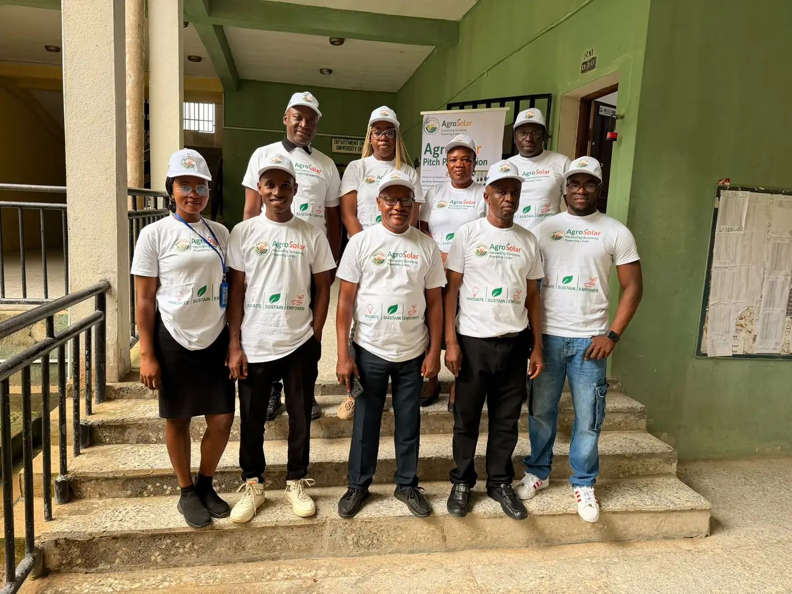
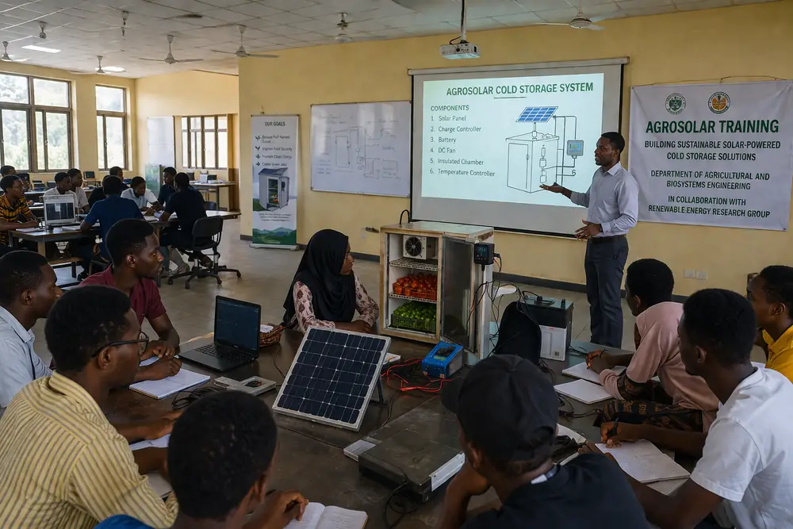
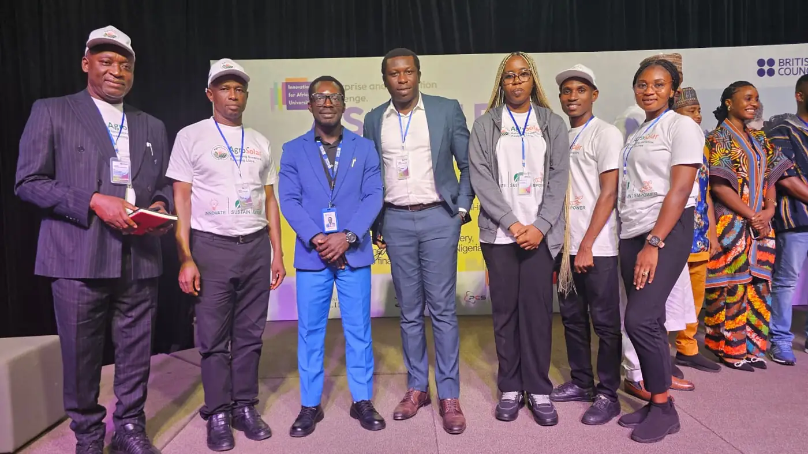

Meet Our Team


Dr Emmanuel Godwin Oyiwona
Chief Lecturer
Benue State Polytechnic
PhD Environmental Microbiology
VIEW PROFILE
Dr John Cookey
Lecturer/Co-Researcher
Akwa Ibom State Polytechnic
PhD Medical Biochemistry
VIEW PROFILEWho We Are
The AgroSolar Technopreneurship Centre (ASTIC) is an interdisciplinary innovation and research hub established to develop, demonstrate and commercialise sustainable, solar-power technologies that address agricultural and post-harvest challenges in Nigeria. ASTIC integrates Science, Technology, Engineering, Agriculture, Entrepreneurship and Innovation (STEAEI) to transform research ideas into practical solutions for farmers, traders, entrepreneurs, industries and communities.


Our Mission
To harness renewable energy, scientific research and entrepreneurship to develop and deploy innovative technologies that create economic opportunities, empower communities and contribute to sustainable national development.
Our Vision
To become a leading African centre for innovative, sustainable and commercially viable technologies that enhance agricultural productivity, reduce post-harvest losses and provide food security.
Supported by the British Council and global partners, AgroSolar provides training, mentorship, funding opportunities, and access to international expertise in green technology.

Chief Lecturer
Benue State Polytechnic
PhD Environmental Microbiology
VIEW PROFILELecturer/Co-Researcher
Akwa Ibom State Polytechnic
PhD Medical Biochemistry
VIEW PROFILEThe AgroSolar Technopreneurship and Innovation Centre (ASTIC) brings together academic knowledge, renewable energy, agriculture and innovation to develop practical solutions for reducing post-harvest losses and promoting sustainable agricultural development.
Explore the project information document to learn more about ASTIC, its objectives, activities, partnerships, innovation, training and expected impact.
READ ASTIC PROJECT INFORMATIONAgroSolar helps farmers preserve crops using solar-powered technology.